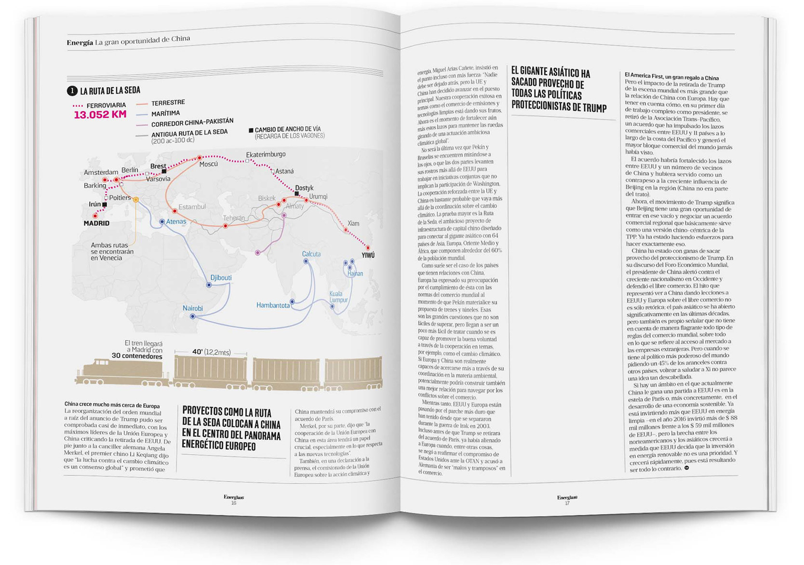

La Ruta de la Seda
Editorial Infographic / Map VisualizationContext
This infographic explores China's Belt and Road Initiative, mapping both terrestrial and maritime trade routes across Europe, Asia and Africa.
The piece was developed as part of an editorial publication, where the infographic supports a broader journalistic narrative.
Challenge
The challenge was to simplify complex geographic and logistical data into a clear and readable map, while ensuring it could integrate seamlessly within an editorial layout.
Design Approach
A map-based visualization was developed to differentiate land and maritime routes through color coding and path hierarchy. Key cities and nodes were highlighted to emphasize connectivity and scale.
The design prioritizes clarity and legibility, allowing the infographic to function both independently and within a larger editorial context.
Role
Infographic design and data visualization. The editorial layout and text composition were part of the publication's design system.
